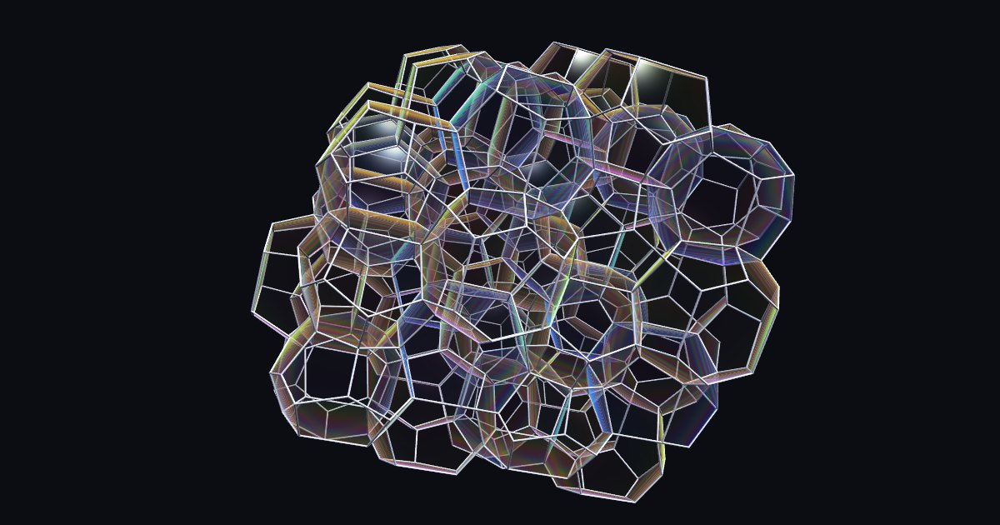

Math Explorer · Foams
Foams: Kelvin's foam, Weaire–Phelan and bubbles that fill space
How do you split space into bubbles of equal size using the least soap film?

In 1887 Lord Kelvin proposed the best way to fill space with equal bubbles: fourteen-sided cells. For a hundred years nobody beat it, until in 1993 Denis Weaire and Robert Phelan found a foam of two kinds of bubble that uses about 0.3% less film. It was used for the Water Cube at the Beijing Olympics. Nobody yet knows whether it is the best.
Math Explorer builds 23 foams exactly, from crystal structures, random points and settled bubbles, and gives each a wall score against Kelvin's. You can pull them apart, show only the bubbles with a given number of faces, fly down an endless tube of bubbles, and look at the exact shape of a double bubble.
Things to try
- Compare Kelvin's foam with Weaire–Phelan's and their wall scores
- Pull a foam apart to see its separate bubbles
- Press G to fly down the endless tube of bubbles
- Let a random foam settle
- Look at the double bubble's curved middle wall